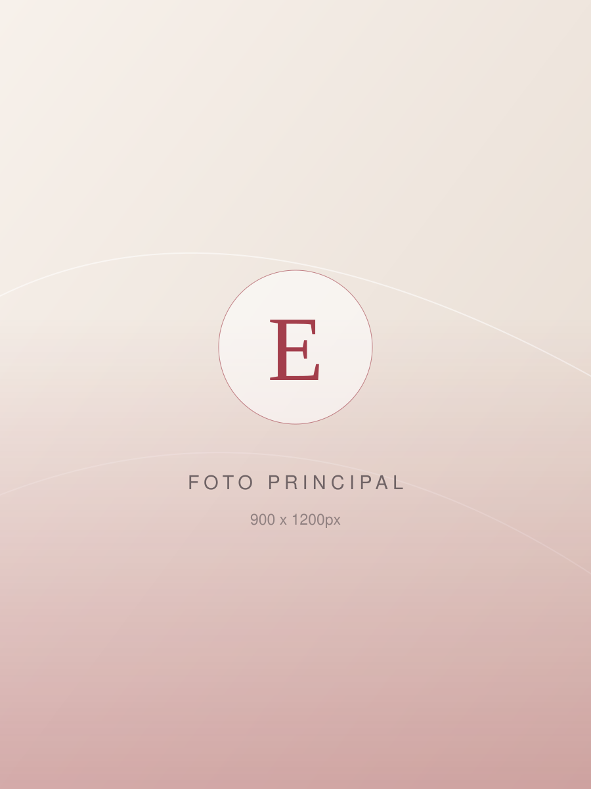
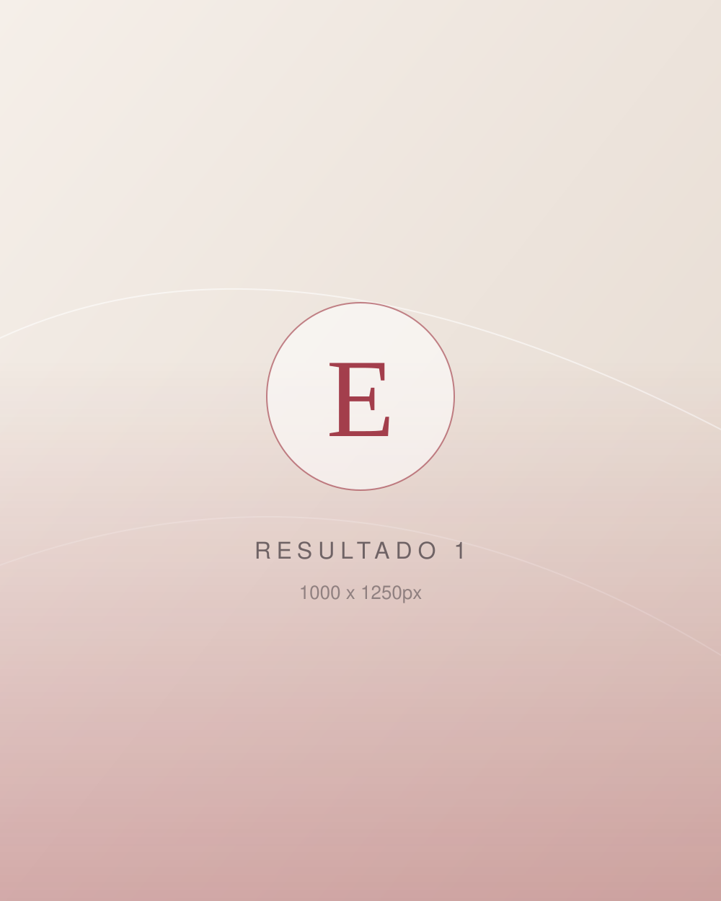
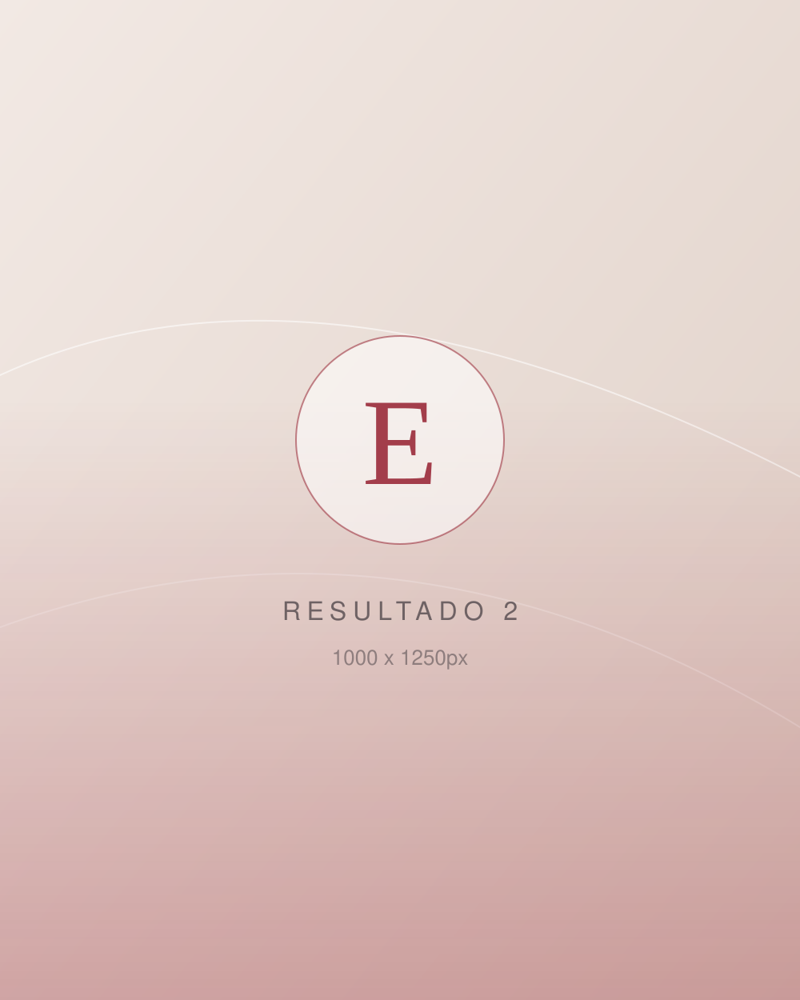
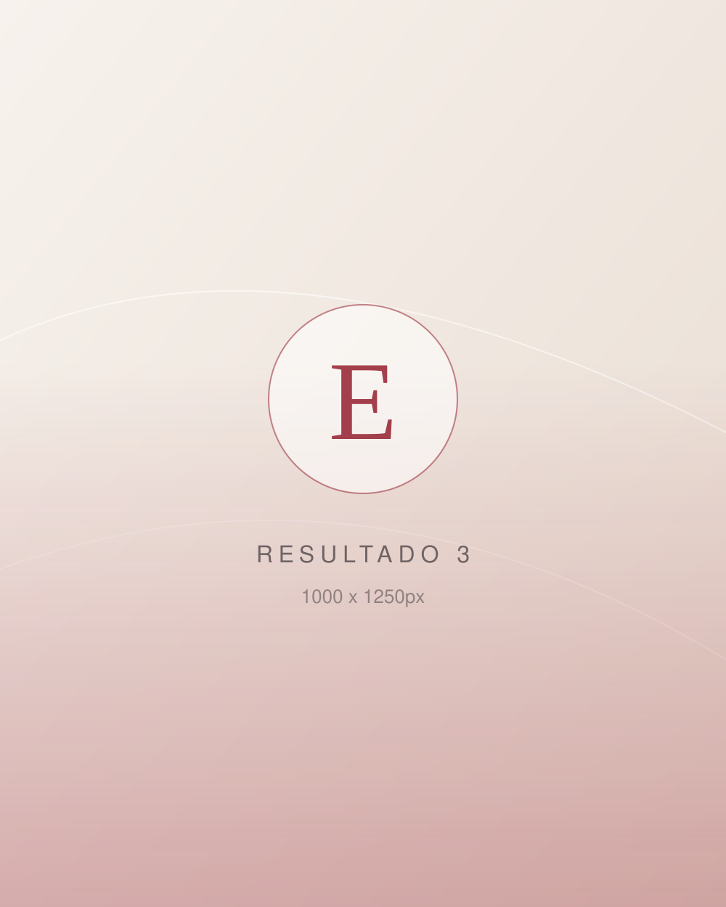
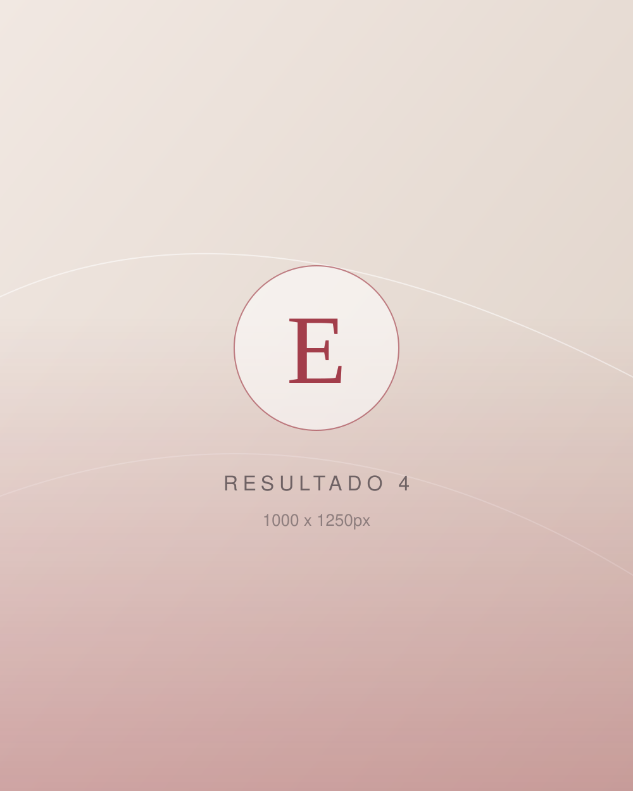
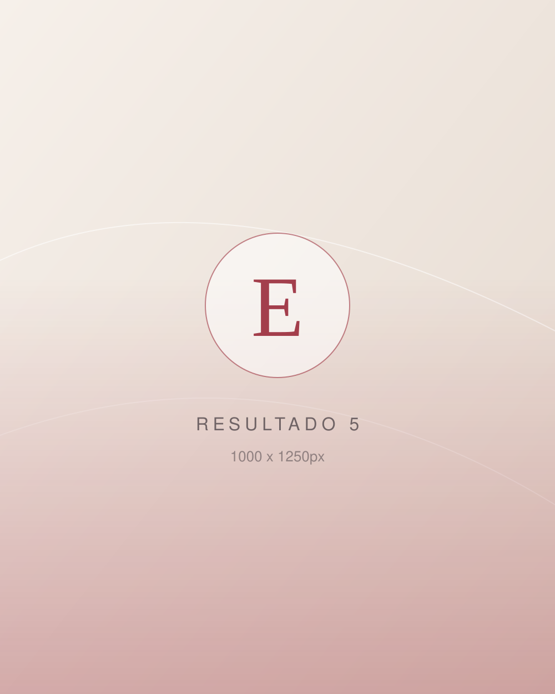
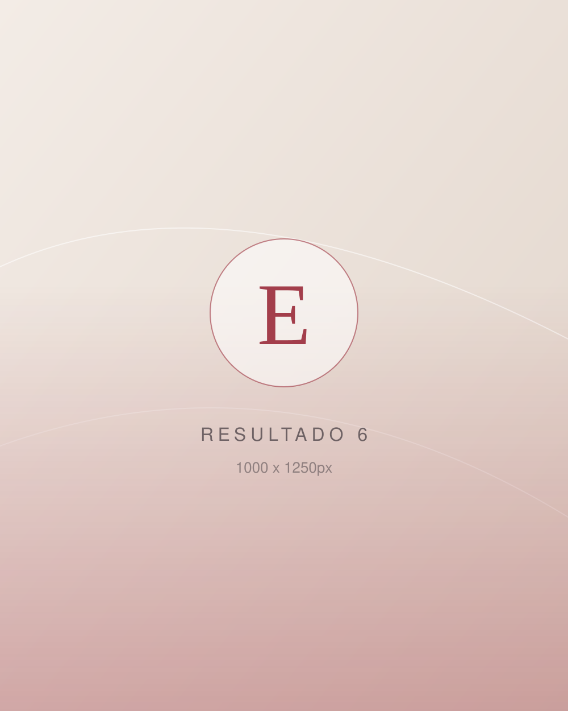

Cabelo humano · Feito para você
Laces de luxo
sob medida
Um cabelo que encaixa perfeitamente na sua cabeça, com fio humano selecionado e acabamento natural — daqueles que ninguém percebe que é lace.
- Cabelos humanos selecionados fio a fio
- Encaixe personalizado e confortável o dia inteiro
- Resultado natural e sofisticado
Atendimento privativo, com hora marcada · Agenda limitada por semana

100% cabelo humano
Lava, escova, prende e finaliza
Feita sob medida
Molde da sua cabeça, não tamanho padrão
Hora marcada
Espaço reservado só para você
Acompanhamento
Orientação e revisão de manutenção
Para quem é
Você se reconhece em alguma dessas situações?
A lace sob medida resolve o que o cabelo do dia a dia não consegue resolver sozinho — e devolve a sensação de se olhar no espelho e gostar do que vê.
-
Queda, rarefação ou alopecia
Cobertura total e confortável, sem tensionar o que você ainda tem, com aspecto de cabelo nascendo do couro cabeludo.
-
Cabelo danificado por química
Enquanto o seu descansa e se recupera, você continua com um cabelo bonito — sem precisar prender todo dia.
-
Quer comprimento agora
O comprimento e o volume que levariam anos para crescer, prontos em uma única aplicação.
-
Já usou peruca pronta
E sentiu que apertava, escorregava ou parecia artificial. Sob medida, o encaixe é feito para a sua cabeça.
-
Rotina corrida
Você acorda pronta. Menos tempo no espelho, mais tempo para o que importa.
-
Momento especial
Casamento, formatura, viagem ou uma fase nova. Um cabelo à altura da ocasião.
O diferencial
Lace pronta × lace sob medida
Parece a mesma coisa na foto. Na sua cabeça, a diferença é enorme.
| Critério | Lace pronta | Lace sob medida |
|---|---|---|
| Medidas | Tamanho único de catálogo | Molde tirado da sua cabeça |
| Cabelo | Fibra ou mistura | 100% humano, selecionado |
| Linha do cabelo | Densidade padronizada | Desenho e densidade personalizados |
| Cor | A que tiver disponível | Escolhida junto com o seu tom de pele |
| Conforto | Aperta, marca ou escorrega | Firme e confortável por horas |
| Resultado | Percebe-se que é peruca | Parece que nasceu na sua cabeça |
Como funciona
Do primeiro contato ao espelho
Um processo simples, conduzido por mim do começo ao fim.
-
Avaliação
Conversamos sobre o seu objetivo e avaliamos couro cabeludo, formato do rosto e rotina. É aqui que o projeto nasce.
-
Projeto e medidas
Tiro o molde da sua cabeça e definimos juntas cabelo, cor, densidade, comprimento e o desenho da frontal.
-
Confecção artesanal
Sua lace é montada fio a fio dentro do projeto aprovado — exclusiva, só sua.
-
Aplicação e finalização
Colocação, corte, finalização e orientação completa de manutenção para você sair usando com segurança.
O que está incluso
- Avaliação personalizada
- Molde e medidas
- Cabelo humano selecionado
- Confecção artesanal
- Corte e finalização
- Orientação de manutenção
Resultados
Transformações reais
Cada trabalho é único, feito para o rosto, a rotina e o desejo de cada cliente.
-

-

-

-

-

-

Depoimentos
O que dizem as clientes
-
exemplo — substituir
“Texto do depoimento da cliente aqui: o que ela sentia antes, como foi o atendimento e como se sentiu com o resultado.”
-
exemplo — substituir
“Um segundo depoimento, de preferência de quem tinha alguma objeção (preço, medo de não ficar natural) e mudou de ideia.”
-
exemplo — substituir
“Um terceiro depoimento falando de conforto e do dia a dia com a lace: trabalho, academia, praia, quanto tempo dura.”
Dúvidas frequentes
Antes de agendar
Quanto tempo dura uma lace de cabelo humano?
Com os cuidados corretos, uma lace de cabelo humano dura bastante tempo de uso. A durabilidade depende da frequência de uso, da manutenção e da forma como você lava e guarda. Na avaliação eu explico direitinho a rotina de cuidado do seu modelo.
Posso lavar, prender e usar chapinha?
Sim. Por ser cabelo humano, você lava, escova, prende, alisa e modela como faria com o seu próprio cabelo — respeitando as orientações de temperatura e de produtos que passo na entrega.
A lace danifica o meu cabelo natural?
Não. O encaixe sob medida distribui o apoio sem tensionar os fios, e o seu cabelo fica protegido embaixo. Inclusive é uma ótima opção para quem está em processo de recuperação capilar.
Quanto tempo leva para ficar pronta?
Como cada peça é confeccionada individualmente, existe um prazo de produção que combinamos na avaliação, conforme o tipo de cabelo, o comprimento e a agenda do momento.
Serve para quem tem alopecia ou pouquíssimo cabelo?
Sim, esse é um dos casos que mais atendo. O sistema de fixação é escolhido de acordo com a sua condição de couro cabeludo, priorizando conforto e segurança.
Qual é o valor?
O valor varia conforme o comprimento, a densidade e o tipo de cabelo escolhido. Por isso o orçamento é fechado depois da avaliação — assim você recebe um preço exato, sem surpresa. Chame no WhatsApp que explico as opções e as formas de pagamento.
Atende clientes de outras cidades?
Sim. Muitas clientes vêm de fora e concentram avaliação e aplicação na mesma viagem. Me chame no WhatsApp para organizarmos as datas com antecedência.
Como funciona a manutenção?
A manutenção é periódica e mantém a peça bonita e bem fixada por muito mais tempo. Na entrega você já sai sabendo a rotina de casa e quando voltar para revisão.
Agende já
Vamos desenhar a sua lace?
Preencha em 30 segundos e eu te respondo pessoalmente no WhatsApp com as próximas datas disponíveis.